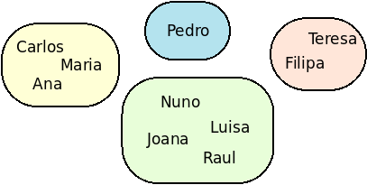
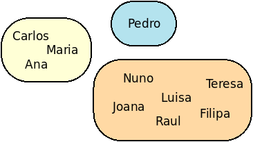

Para efeitos da nota atribuida à resolução de exercícios ao longo do semestre - Submeter até 23:59 de 3 de Janeiro
(o problema continuará depois disponível para submissão, mas sem contar para a nota)
No contexto de uma pandemia, uma bolha é um conjunto de pessoas que têm contacto físico próximo e regular. Uma bolha é por exemplo uma família que mora na mesma casa. Familiares ou amigos que vivam noutras casas não são da mesmo bolha. Por exemplo, a seguinte figura ilutra 10 pessoas que pertencem a 4 diferentes bolhas:

A Administração de Saúde sabe que por vezes diferentes bolhas se misturam, porque duas pessoas se encontraram e ficaram próximas e sem máscara durante muito tempo. A partir do momento em que isto acontece, as bolhas de ambas juntam-se numa única bolha. Por exemplo, se a Teresa e a Luisa se encontram, então passam a existir apenas 3 bolhas como indicado na seguinte imagem:

Tens de ajudar a Administração de Saúde a gerir as várias bolhas, criando um programa que permita gerir novos contactos e ao mesmo tempo ser capaz de perceber se duas pessoas pertencem ou não à mesma bolha.
Dado um conjunto de bolhas iniciais, a tua tarefa é processar dois tipos de operações que vão acontecendo ao longo do tempo: (1) saber se um dado par de pessoas está na mesma bolha; (2) ser capaz processar um encontro entre duas pessoas, juntando as suas bolhas numa só no caso de pertencerem a bolhas diferentes.
A primeira linha contém dois inteiros N P, indicando respetivamente o número N de bolhas iniciais e o número P de pessoas a considerar. Seguem-se N linhas, cada uma indicando uma bolha. Cada uma destas linhas começa por indicar Q, o número de pessoas nessa bolha, seguida dos nomes das pessoas dessa bolha. É garantido que existem no total P pessoas, que nunca aparecem nomes repetidos, e que estes são constituídos apenas por 1 a 10 letras.
A linha seguinte contém um inteiro T o número de operações a considerar. Seguem-se T linhas indicando as operações, que podem ser do tipo:
Podes assumir que todos os nomes dados existem numa das bolhas iniciais.
O output deve ser constituído por T linhas, uma por cada operação:
Notem que as operações são feitas consecutivamente no tempo. Por isso, o resultado da i-ésima operação deve assumir que entretanto já foram feitas antes todas as operações que a antecedem no input.
São garantidos os seguintes limites em todos os casos de teste que irão ser colocados ao programa:
| 1 ≤ N ≤ 50 000 | Quantidade de bolhas iniciais | |
| 1 ≤ P ≤ 50 000 | Quantidade total de pessoas | |
| 1 ≤ T ≤ 50 000 | Quantidade de operações |
4 10 3 Carlos Maria Ana 1 Pedro 4 Nuno Luisa Joana Raul 2 Teresa Filipa 9 P Filipa Nuno E Teresa Luisa P Filipa Nuno P Pedro Carlos P Carlos Nuno E Ana Filipa P Pedro Carlos P Ana Joana E Filipa Maria
nao 3 sim nao nao 2 nao sim 2
Desenho e Análise de Algoritmos (CC2001)
DCC/FCUP - Faculdade de Ciências da Universidade do Porto